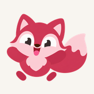

Ohymeku
Відкрита тестова версіяВчи англійську з Meku: проходь пригоди, збирай слова та спілкуйся з персонажами.
Встановлення відкрите для всіх — запрошення тестера не потрібне.
Android
- Відкрий це посилання у Chrome.
- Натисни «Встановити на телефон», якщо кнопка з’явиться. Або відкрий меню ⋮ → Додати на головний екран → Встановити.
- Шукай іконку Meku серед своїх застосунків.
iPhone та iPad
- Відкрий це посилання у Safari.
- Натисни «Поділитися» → «На початковий екран» → «Додати».
- Відкривай Ohymeku через іконку Meku.
Допоможи зробити Meku кращою
Помітив помилку? Надішли скриншот, модель телефона й короткий опис на adminnovik@gmail.com.
Це вебзастосунок, який встановлюється з браузера. Перший запуск і функції ШІ потребують інтернету. Прогрес зберігається на цьому пристрої; встановлення не підключає ШІ автоматично.